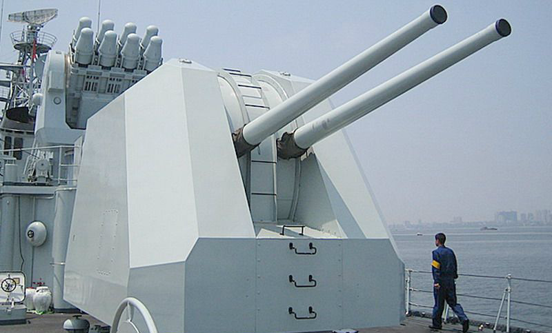
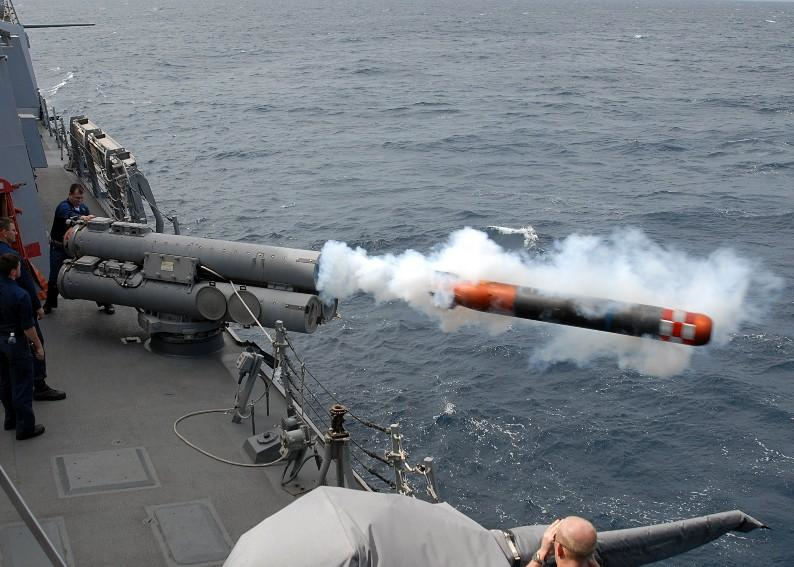
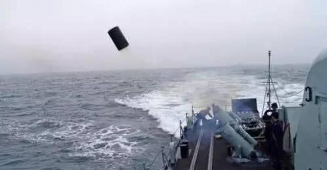
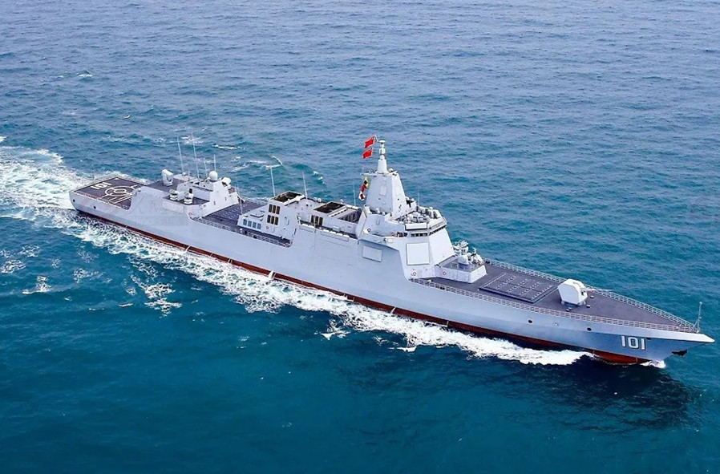
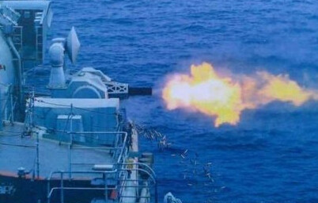

“骑士之剑”——舰载武器

*现代化的舰炮
舰炮-纯粹的火力
在火炮被发明后，战舰的主要武器便是舰炮。早期的风帆战舰会把土炮放置在战舰甲板上 通过炮孔向外射击，但是彼时的火炮都是前装炮，没有膛线，距离短且威力小。铁甲舰时代， 火炮的威力进一步加强，部分战舰已经装有后膛炮，为了方便炮管的转向，人们设计了液压系统 助力炮口转动，并为了保护炮手安全，将炮用装甲包裹，炮塔思想逐渐形成。 一二战时代，随着战列舰的不断加强，舰炮达到了巅峰时代，当时各国海军疯狂鼓吹“大炮巨舰”的思想，口径即为正义 舰炮口径一度达到了406、460mm甚至有超过500mm的舰炮！中国史上最大的舰炮是晚清北洋舰队中 定远舰上的305mm主炮。

*定远舰上硕大的305mm主炮（图为刘公岛上的定远舰复制品）
在二战结束后，人们将航母搬上了海军的主舞台，“大炮军舰”的桎梏被打破，舰炮逐渐失去了主要作用， 转而成为后备力量，现代战舰的舰炮几乎只有一座炮塔，且口径较小。虽然现代战舰100多mm的舰炮确实 小于早期舰炮，但事实上，它具有炮导一体的功能，并有着不俗的射程。
鱼雷-隐形的刺客
战舰在水上都有强大的装甲，但水线下装甲较为薄弱，因而攻击水下部分 可对战舰造成致命打击，鱼雷由此而生。 早期的鱼雷用飞轮储能，射程短、命中率低，需要通过鱼雷艇在夜间偷袭，才能造成 大量伤害。 随着技术进步，鱼雷的射程变得更长，成为了驱逐舰、巡洋舰等中小型舰艇对抗大型战舰的 强有力的武器。 潜艇及声纳导向鱼雷的发明让鱼雷的威力更上一层。 现代鱼雷拥有更强的制导能力以及续航能力。

*从鱼雷发射管中发射鱼雷
深水炸弹-让潜艇无可遁形
深水炸弹是一种典型的反潜武器，投放后下沉到水中一定深度爆炸的水中武器。主要用于毁伤潜艇，也用于开辟雷区通道或攻击其他水中目标。简称深弹。 由水面舰艇或飞机发（投）射。深弹结构简单，研制周期短，操作使用方便，是一种廉价的反潜武器。 现在的反潜武器多是反潜火箭、舰载鱼雷等。
*从发射器中发射深水炸弹
导弹-现代海战的王牌
舰载导弹的主要任务是防空反导，兼顾对水面舰艇射击。 按打击距离可以分为近程、中程、远程舰载导弹，是水面舰队的现代化武器。 由于导弹具有出色的自导能力，并更易于携带，成为了现代海战的关键武器。

*南昌舰上有用于垂直发射的导弹发射井
近防炮-最后守护
近防炮是大型舰艇的近战防卫武器，同时也是最后一道防线。 它一般用有极高的射速，每分钟可射近万发子弹，并具有灵敏的锁定系统 时刻保卫着舰艇的安全。

*1130型近防炮